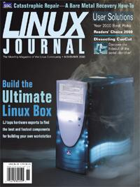

![[ Prev ]](../gx/navbar/prev.jpg)
![[ Table of Contents ]](../gx/navbar/toc.jpg)
![[ Front Page ]](../gx/navbar/frontpage.jpg)
![[ FAQ ]](./../gx/navbar/faq.jpg)
![[ Next ]](../gx/navbar/next.jpg)

"Linux Gazette...making Linux just a little more fun!"
 |
Contents:
|
Selected and formatted by Michael
Conry
Late additions added by the Editor
Submitters, send your News Bytes items in PLAIN TEXT
format. Other formats may be rejected without reading. You have been warned!
A one- or two-paragraph summary plus URL gets you a better announcement
than an entire press release.

 November 2000 Linux
Journal
November 2000 Linux
Journal
The November issue of Linux Journal
is on newsstands now. This issue focuses on Hardware. Click here
to view the table of contents, or here
to subscribe.
All articles through December 1999 are available
for public reading at http://www.linuxjournal.com/lj-issues/mags.html.
Recent articles are available on-line for subscribers only at http://interactive.linuxjournal.com/.
Distro News
Caldera
Oct. 3, 2000: Caldera Systems has announced that its Linux management solution,
formerly known as Cosmos, is entering open beta. This solution will enable
administrators to manage the networked systems of any Linux distribution.
Caldera aims to allow network administrators to use policies and profiles
to manage a half dozen or thousands of Linux systems, without having to
individually manage each.
The Beta is available for download from
http://www.calderasystems.com/beta/.
Conectiva
Duke of URL review.
Lute
Oct. 6th, 2000:
LuteLinux.com. has
announced the addition of ShowMeLinux.
to their family of services. LuteLinux will host future issues and will
take over as publisher of ShowMeLinux, an on-line magazine 'Bringing news
to Business Professionals and Enthusiasts alike.' Contributions to ShowMeLinux
are welcome, and should be directed to:
info@showmelinux.com.
In a further initiative LinuxFreeSupport will be authoring
ShowMeLinux's
'Support Line'. The Support Line is a column offering answers to questions
posed by readers regarding such topics as installations, networking, administration,
applications, and the desktop.
Mandrake
Linux-Mandrake 7.2 is now available
for download. It includes KDE 2.0, GNOME 1.2, PowerPak's ViaVoice
voice-recognition software, the CUPS printing system, laptop profile and
synchronization utilities, KOffice, ReiserFS (a journalling filesystem),
Supermount (transparent access to removable media) and MandrakeUpdate
(free automatic online upgrades of system software). Linux-Mandrake 7.2 speaks
several dozen languages and will soon be offered in three commercial versions
for home and business users.
Red Flag
Oct. 18, 2000: Red Flag Linux
is officially launched by Sun Wah Linux Ltd. Included in this launch are
Red Flag Linux Server 2.0 and Red Flag E-business Start Kit 1.0. The former,
run on 32-bit, 64-bit or higher-end machines, optimizes server hardware
performance. This product can improve the efficiency of office work. It
provides a complete business Internet/Intranet connection solution, an
ISP/ICP solution which can control website traffic and InterScan VirusWall
network anti-virus software. All of these functions combine for the best
platform for network business. Targeting the growing m-commerce market,
Sun Wah Linux and EdgeMatrix have also embarked on a bundling program with
WAPgate, residing on Red Flag Linux platform.
Red Flag Linux Server 2.0 was developed strictly in accordance with
international L118NUX standards and General Public License regulations.
Red Flag E-business Start Kit 1.0 is an integrated solution for businesses.
It consists of six components: Red Flag Linux Server 2.0; e-Office, for
users to easily transfer internal data via the Internet; e-Shop, where
users can easily create their own e-shops through the Internet; Web Mail,
providing an inter-platform e-mail system manager designed for businesses;
Web BBS, for customers to offer feedback and suggestions on the message
board; and Ez2min, a remote monitoring software for the Linux system operated
through the browser.
Mr. Alex Banh, Deputy Chief Executive Officer of SW Linux has expressed
a commitment to developing international markets for homegrown Chinese
software and to promoting Linux training in local Chinese institutes.
Rock
ROCK Linux 1.3.11 has been released.
SuSE
SuSE Linux 7.0 Personal Edition equips
small office and home users with all the resources needed to install, configure
and operate a Linux system and comes on 3 CDs. This package includes over
600 programs including StarOffice 5.2, Netscape and VMWare plus three easy-read
manuals. The Personal Edition is retailing at R410.00.
The Professional Edition of SuSE 7.0 contains a collection of power
tools including VMWare Workstation for Linux, Emhydra by Lutris Technologies,
PostGreSQL. Suse Linux 7.0 Professional is supplied on 6 CDs and four manuals.
90 days of installation and basic configuration support by phone, fax or
email are also included in the Professional version, which is available
from OS/2 Express for R615. Contact OS/2
Express. We are advised that a limited number of evaluation packages
are available.
News in General
Upcoming conferences
& events
Courtesy Linux Journal's
Events page.
Linux Business Expo
(co-located
with COMDEX event)
| November 13-17, 2000
Las Vegas, NV
www.key3media.com/linuxbizexpo
|
USENIX Winter - LISA 2000
| December 3-8, 2000
New Orleans, LA
www.usenix.org
|
Pluto Meeting 2000
| December 9-11, 2000
Terni, Italy
meeting.pluto.linux.it
|
LinuxWorld Conference & Expo
| January 30 - February 2, 2001
New York, NY
www.linuxworldexpo.com
|
ISPCON
| February 5-8, 2001
Toronto,
Canada
events.internet.com
|
Internet World Spring
| March 12-16, 2001
Los Angeles, CA
events.internet.com
|
Game Developers Conference
| March 20-24, 2001
San Jose, CA
www.cgdc.com
|
CeBit
| March 22-28, 2001
Hannover, Germany
www.cebit.de
|
Linux Business Expo
| April 2-5, 2001
Chicago, IL
www.linuxbusinessexpo.com
|
Strictly e-Business Solutions Expo
| May 23-24, 2001
Location unknown at present
www.stricltyebusinessexpo.com
|
USENIX Annual Technical Conference
| June 25-30, 2001
Boston, MA
www.usenix.org
|
PC Expo
| June 26-29, 2001
New York, NY
www.pcexpo.com
|
Internet World
| July 10-12, 2001
Chicago, IL
events.internet.com
|
O'Reilly Open Source Convention
| July 23-26, 2001
San Diego, CA
conferences.oreilly.com
|
LinuxWorld Conference & Expo
| August 10-14, 2001
New York, NY
www.linuxworldexpo.com
|
Linux Lunacy
Co-Produced by Linux
Journal and Geek Cruises
| October 21-28, 2001
Eastern Carribean
www.geekcruises.com
|
Jabber.com Announces
Palm Integration and Three-Way Partnership for New Jabber Wireless Initiative
Sept. 25, 2000: Jabber.com Inc. has
announced Palm and Jabber integration along with a three-way partnership
between Jabber.com, WorkSpot Inc., a premier open source Application Service
Provider, and IQ3G, Inc., a leader in enterprise wireless solutions. The
three-way partnership has been established as the foundation for a new
Jabber wireless initiative and marks the beginning of Jabber's efforts
in the wireless market. Under the new initiative, WorkSpot, IQ3G and Jabber.com
are working together, along with the open source community, to develop
Jabber compatibility with Palm devices.
Jabber has also announced a strategic relationship with Red Hat to deliver
real-time messaging infrastructure to Red Hat embedded Linux. Elements
of this were showcased at the Embedded Systems 2000 show, September, in
San Jose, Calif. Jabber is the only open source, XML-based platform for
extensible instant messaging applications. For the latest developments
on the Jabber landscape, consult their news
site.
Dell First
To Market with Red Hat Linux 7
Sept. 25, 2000: DELL has announced availability
of Version 7 of the Red Hat Linux operating system on Dell PowerEdge(tm)
servers and Dell Precision(tm) Workstations worldwide. The new operating
system is also available on select configurations of Dell desktop and notebook
PC products. Dell and Red Hat, as part of their One Source Alliance, worked
closely during the development of Red Hat Linux 7 to ensure smooth installation
and interoperability of the operating system on Dell server and client
products. Details of a benchmark test of Dell PowerEdge 8450 and Dell PowerEdge
6400 servers running Red Hat Linux and TUX 1.0 have been posted on SPEC's
Web site,
http://www.spec.org, since
August, 1999, where the Dell machines led the field.
Neoware
KING OF PRUSSIA, PA: Neoware Systems
, a leading supplier of award-winning software and solutions for the emerging
information appliance market, announces that Security Applications, Inc.
has selected Neoware's Eon information appliance platform and NeoLinux
software to power its new, fully networkable building security panel, e-Panel.
Security Applications has ported its proprietary UNIX software to Neoware's
Eon platform running the NeoLinux operating system which is based upon
Official Red Hat Linux. NeoLinux is the first embedded version of Official
Red Hat Linux. Neoware has also announced that the opening of four new
US sales offices to continue its growth efforts. This coincides with an
recruitment of several key personnel.
VMware Announces New
User Group Program
Palo Alto, Calif., Sept. 28, 2000 - VMware,
Inc. today announced the launch of a new and improved user group program.
This program will provide support to relevant user groups around the world
in the form of software, giveaways, product collateral and technical guides,
presentation materials, consideration for VMware speaker participation
at events, and more. Further information is available at VMware's site.
http://www.vmware.com/news/user_groups/index.jsp.
Sensiva partners with
Wacom Asia Pacific
Mountain View, California, Oct. 2, 2000- Sensiva,
Inc., a leading manufacturer of computer graphic tablets and electronic
pens, announces a partnership with Wacom Co., Ltd., to offer Sensiva clients
interactive symbol recognition functionality in all their tablet products.
Through this, people will not only be allowed to copy and paste images
directly into the computer but to also navigate much faster through Internet
and software applications using simple symbols.
China Internet laws
CNN has a scary article
about China's Internet laws.
"Internet content and service providers must keep records of all the content
that appears on their Web sites and all the users who dial on to their
servers for 60 days, and hand the records to police on demand, the rules
state."
Definitions of illegal content are vague, such as "spreading rumors",
"disrupting social stability", gambling and pornography.
The rules also forbid "harming ethnic unity" and "advocating cults and
feudal superstition" -- terms often invoked to prosecute suspected Tibetan
independence activists and members of Falun Gong and other spiritual movements.
Opera, PalmPalm
and Trolltech form Strategic Alliance for Asian Embedded Linux Market
Sept. 25, 2000:
Opera Software,
PalmPalm Technology Inc., and
Trolltech
announce the formation of a strategic alliance for the Asian wireless Linux
market. The companies will jointly develop "Linux Total Solution for Wireless
Internet Appliance" for hardware manufacturers in the wireless Internet
space.
Linux Total Solution for Wireless Internet Appliance consists of Opera's
"Opera for Linux" Web browser, Trolltech's "Qt/Embedded," an embedded GUI
environment and windowing system, integrated with PalmPalm's "Tynux," a
Linux Operating System optimized for the wireless Internet. This is to
provide a complete embedded Linux solution for wireless Internet devices.
Linux Links
Linux.com
Talk to Eazel about Linux UI and working in the OSS model
The Duke of URL Links
-
Linux Buyer's
Guide #5 Includes details on current state of video cards for linux,
3dfx, Matrox, the works. Also, looks at configured systems covering the
gamut of price points, and examines where the future hardware advances
will take us.
-
3D on Linux
HowTo Covers setup of NVidia, 3dfx and Matrox accelerated drivers.
Plus, an overview of 3D in Linux.
-
Interview
with Nick Triantos While NVidia has broken into Linux, there is still
much mystery behind their drivers. Open source, closed-source, licensed
technologies and more are our subjects today with our guest, Nick Triantos
of NVidia.
-
Libranet
Linux 1.8 Libranet is based on the Debian Potato, and sports a new
breed of user-friendliness and a scaled-down package selection that even
includes the likes of QuakeForge. Read a review here.
-
Wireless
LAN Overview The Duke of URL's newest writer has just whipped up an
overview on Wireless LAN technology
Why
the world needs reverse engineers -- or -- What Digital Convergence
(the maker of CueCat) wasn't telling its customers
Did
Al Gore invent the Internet?
Anchordesk UK links:
- Linus
has no problem with large-system vendors making
kernel patches
--or--
How a famous 3-letter vendor of Big Iron is trying
hard not to use that other 4-letter f-word that ends in "k" and whose second
letter is "o".
-
Can Cobalt make Sun shine? On Sun's acquisition of Cobalt, maker of the
Cobalt Qube.
Kernel Wiki
invites contributions of documentation/illumination on aspects of the
Linux kernel.
Word processing
in Linux : a business perspective.
The Ninth International Python Conference.
Gimp-Savvy.com contains a guide called
"Grokking the GIMP", which covers the use of the GIMP's core tools and shows
how nine major projects were done.
The HP-HOWTO shows how to use Linux with various Hewlett-Packard products,
and what level of Linux support there is for each product.
European lawmakers
propose to make hacking illegal. (MSNBC)
An interesting proposal to force
abandoned copyrighted products into the public domain.
(OS Opinion)
A review of four Windows emulators and PC emulators. (Linux World)
Linux in the financial industry. (Tech Web)
Embedded OS licencing fees:
how the lack of licencing fees for embedded Linux products will enable many
times more embedded devices to appear on the market and allow smaller companies
to get in on the act. (ZDnet)
Interview with Vincent Rijmen of the Rindael AES algorithm, a
DES replacement
which is much harder to crack. Rindael is unencumbered by
intellectual-property and patent claims. (Linux Security)
Software Announcements
NetworX Linux Cluster
Helps Researchers Fight Disease
SANDY, UTAH, Oct. 3, 2000 - Linux
NetworX, Inc., a provider of large-scale clustered computer solutions,
announced today that the National Center for Macromolecular Imaging (NCMI)
at
Baylor College of Medicine will
use the company's clustered computers in its world-renowned molecular imaging
research center.
Using a 32-processor cluster system from Linux NetworX, Baylor College
of Medicine reconstructs the molecular configurations of disease and illness-causing
viruses and other molecules and develops three-dimensional models of their
structures. A cutting-edge technique then allows researchers to view the
viruses as if they were locks. By properly studying these "locks," they
hope to find the "keys" to opening and destroying them. In the past, much
of this research was done on large supercomputers costing millions of dollars.
But today, because of price-performance issues, clustered-computer alternatives
are being selected to handle the large amounts of computation, data handling
and storage required.
In the past, scientists used trial and error methods to create vaccines
and drugs to fight viruses. But now, using clustered computers and other
technologies, they are able to define the structure of these viruses and
attempt to design drugs that will solve the specific problems each one
presents.
In further good news for the company, the Linux NetworX Evolocity (TM)
cluster server receives Best of Show Award for Network Servers & Peripherals
from InernetWeek and Network Computing at NetWorld+Interop 2000 Atlanta.
The Evolocity cluster server, introduced at the show, is designed for managing
and optimizing Web traffic in the Internet market.
Tridia
ATLANTA Sept. 25, 2000---
Tridia Corporation,
a provider of eSupport tools that facilitate interactive support and remote
system administration, has launched Release 2.0 of the company's newest
product offering, TridiaVNC (virtual network computing) the first commercially
supported release of open-source, virtual network computing software that
views and controls Linux consoles. TridiaVNC Release 2.0's Linux viewer
and control features make Linux servers remotely manageable from anywhere
on the network and from a variety of systems (Linux, Windows, Unix, Mac).
A prerelease binary (e.g., beta) will be available by Sept 26 on
www.tridiavnc.com.
The source code will also be available to the public via CVS at
www.developvnc.org.
Those wishing to contribute to this open-source endeavour may also like
to try their hand at naming the TridiaVNC Alien mascot. Further incentive
is the US$5000 prize for the winning entry! Entries can be made on the
TridiaVNC website before November
30 2000.
Teamware Office 5.3
for Linux
Teamware Group has a Groupware application
for Linux called Teamware Office 5.3 for Linux. The product is available
in RPM format for a 90-day evaluation period with a 50-user license at
www.teamware.com/linux/.
It is a ready-to-run groupware product for corporate collaboration and
communication with a customizable user interface and state-of-the-art communications
features. It will be sold for $1000 USD for a 100 user server license.
Proven CHOICE Accounting
releases Internet Toolkit
Oct. 2, 2000 ---
Proven Software,
Inc. is pleased to announce the release of the Proven CHOICE Internet
Toolkit designed to help developers integrate internet applications to
Proven CHOICE accounting. For details, consult this
website.
A sample application using the Proven CHOICE inventory file is available
for inspection.
Proven CHOICE is a powerful multi-user accounting system for linux with
the attributes needed by organizations of medium size. Proven Software
has been developing multi-user business applications for 18 years and exclusively
in Linux for over 5 years.
Workstation Solutions
Announces Quick Restore 2.7
AMHERST, N.H., Oct. 17, 2000 - Workstation
Solutions, Inc., a leader in innovative data protection software, announces
major enhancements to Quick Restore 2.7 that provide increased performance
and scalability in data protection of network attached storage (NAS) and
other platforms. Quick Restore's new performance, scalability, and ease-of-use
features allow customers to backup and restore critical business information
rapidly and cost-effectively. Quick Restore 2.7 can be used with a host
of new devices from Compaq, Exabyte, HP, Breece Hill, Spectra Logic, ADIC,
Qualstar, and StorageTek. Quick Restore 2.7 is available immediately from
Workstation Solutions. List pricing begins at $2500. As part of their partnership
building strategy, Workstation Solutions have formed partnerships with
Network Appliance, VA Linux, and Mirapoint to Support Leading NAS Servers.
Their aim is for Quick Restore to provide flexible, fail-safe, high-volume
data protection for these companies' platforms.
Internet C++ (ICVM) Alpha
Release
Bob A. Dayley, inventor of Internet C++ (an open alternative to Java and
C-Sharp) recently announced the product's alpha release. This release is
a demonstration and test of the virtual machine (ICVM), the compiler (igcc),
and libraries. Complete source to Internet C++ and ICVM are available for
download, as well as binary releases of ICVM for Unix/Unix-like platforms,
including Linux, FreeBSD, and NetBSD. Internet C++ feature a high-speed
virtual machine (ICVM) that is fast enough to run Doom with no JIT compilation.
Bob invites anyone interested to download their Doom port and check it
out for yourself! Further information
is available.
Other software
The Opera web browser 4.0 for Linux is
now in beta.
Magic Software is building an
e-tailing solution called TISTrade for Toyo Information Systems, based on
Magic eMerchant. TISTrade will make it easier for manufacturers and retailers
outside Japan to sell to consumers in Japan.
Copyright © 2000, Michael Conry and the Editors of Linux Gazette.
Copying license http://www.Linuxgazette.net/copying.html
Published in Issue 59 of Linux Gazette, November
2000